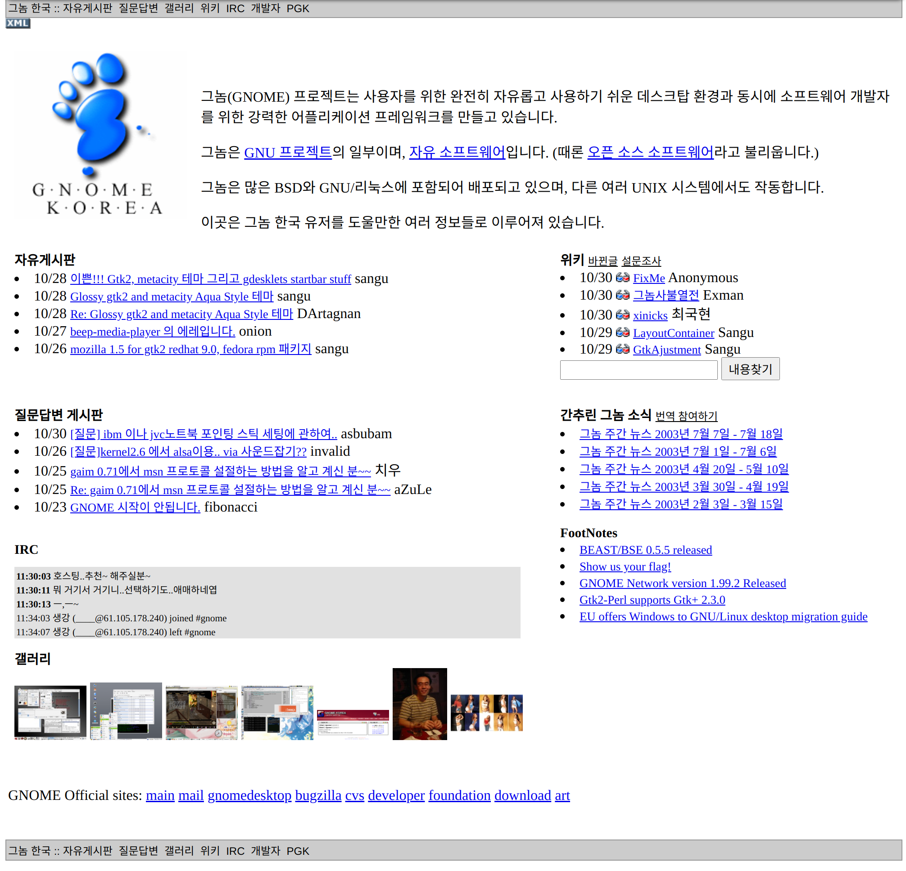
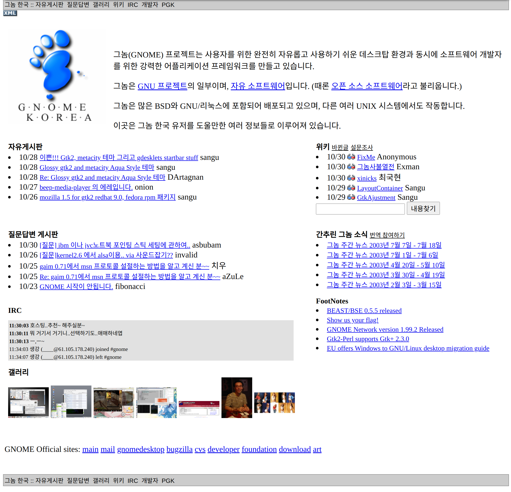

그놈 한국 홈페이지 변천사 #
2007년 2월 20일 #
https://web.archive.org/web/20070220235717/http://gnome.or.kr/
2006년 7월 11일 #
2003년 10월 30일 #

2002년 3월 30일 #

https://web.archive.org/web/20020524140742/http://gnome.or.kr/
https://web.archive.org/web/20070220235717/http://gnome.or.kr/

https://web.archive.org/web/20020524140742/http://gnome.or.kr/